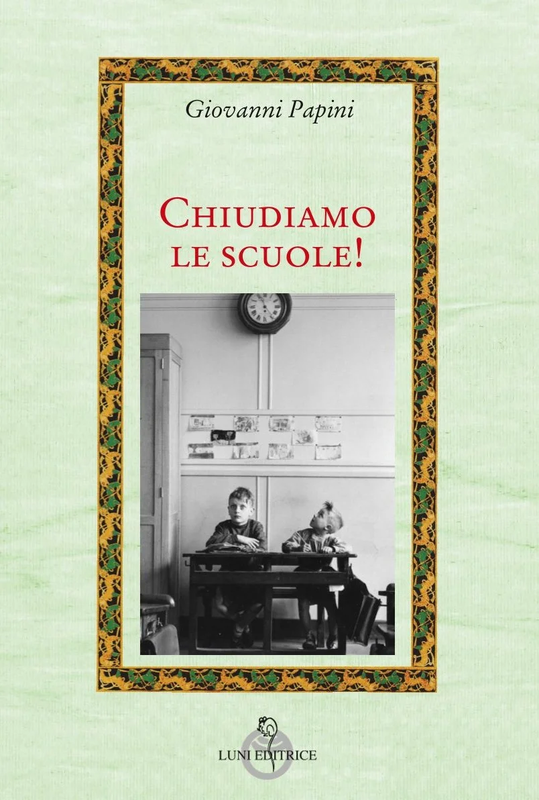
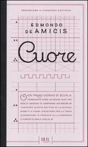
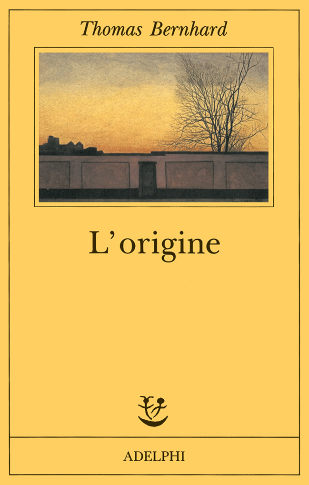

16:39 · 5 OPERE
Metodologia e prassi: insegnamento e istruzione verso una scuola umanista.
Il filo del discorso
Il progetto di una scuola umanista viene discusso a partire dal significato dello studio come attività libera. Dr Divago contrappone l’amore per la conoscenza alla formazione orientata all’utilità e legge la scuola moderna attraverso il liberalismo e il modello prussiano. I riferimenti a Russell, Papini e Bernhard accompagnano la critica dell’istituzione come spazio di conformità. Il discorso difende poi il valore conoscitivo della cultura popolare e la centralità della persona rispetto a prestazioni, esami e credenziali. La proposta finale riguarda l’autonomia della scuola, i libri di testo e il rapporto fra docente e discente, collegando educazione umanistica e libertà di pensiero.
I libri nel discorso

Elogio dell’ozio (In Praise of Idleness)
Copertina della raccolta che contiene il saggio: Longanesi · raccolta Elogio dell’ozio · 2004 · traduzione di Elisa Marpicati
Copertina della raccolta italiana omonima di quindici saggi, Longanesi, 2004. Il saggio annunciato è del 1932; non si attribuisce al filmato questa specifica edizione.
Bertrand Russell, Elogio dell’ozio e il 1932 sono annunciati come riferimento allo studio disinteressato.
Passaggio 2:05 ↗ · Fonti e libro ↗
Chiudiamo le scuole!
Copertina della raccolta che contiene il saggio: Luni Editrice · Attraverso lo specchio · raccolta di cinque scritti · 72 pagine
Copertina ufficiale Luni della raccolta di cinque testi del 1909–1914. Il riferimento registrato è il saggio annunciato nel video; non è stata accertata l’edizione usata dal relatore.
Giovanni Papini e Chiudiamo le scuole del 1914 sono annunciati prima della lettura.
Passaggio 4:06 ↗ · Fonti e libro ↗
Cuore
Identificazione probabile
Copertina: BUR · 2011 · edizione cartacea
Immagine autentica dell’opera, controllata visivamente; non identifica l’edizione usata nel video.
Il libro Cuore è richiamato come esempio di scuola sabauda, senza nominare De Amicis; collegamento probabile.
Passaggio 4:48 ↗ · Fonti e libro ↗
L’origine. Un accenno
Identificazione probabile
Copertina: Adelphi · Fabula 61 · 1992 · traduzione di Umberto Gandini
Immagine autentica dell’opera, controllata visivamente; non identifica l’edizione usata nel video.
Thomas Bernhard è nominato nel passo sulle scuole e sull’assassinio spirituale; il riscontro del passo rinvia probabilmente a L’origine, il cui titolo non è pronunciato.
Passaggio 5:50 ↗ · Fonti e libro ↗
Learning in War-Time
Identificazione probabile
Copertina della raccolta che contiene il discorso: William Collins · The Weight of Glory · ebook · 2013
Copertina dell’ebook William Collins della raccolta The Weight of Glory, che contiene Learning in War-Time del 1939. L’ISBN si riferisce all’ebook della raccolta; edizione e traduzione usate nel video non sono accertate.
Lewis e il 1939 sono richiamati con la frase sui buoni libri e sul ragionamento razionale; identificazione probabile del discorso Learning in War-Time.
Passaggio 11:53 ↗ · Fonti e libro ↗